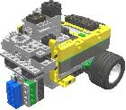
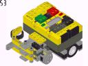
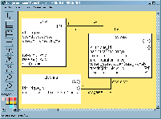
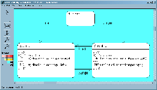
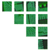

Table of Contents
MC-3020 is a UML model translator ideal for small systems, especially deeply embedded control systems. Often these deeply embedded control systems are running on small, 8-bit or 16-bit micros. Can high-level tools such as BridgePoint be used to model and efficiently generate code for such small systems? How better to demonstrate than to actually do so onto a small system.
The Lego RCX programmable brick runs the Renesas (formerly Hitachi) H8 microcontroller. (See GNU Development Tools for the Hitachi H8/300 Series or H8/300H Series for more information.)
This microcontroller runs 32 kbytes of RAM. It has several peripherals including analog inputs, pulse width modulators, LCD interface, serial interface controller, timers and more. This is a small processor but is a workhorse. It represents an excellent example of a typical, deeply embeddible microcontroller.
Translating UML models to run on this platform can demonstrate that the tools normally thought to be for the big systems developers are available for the small systems world. Model-Driven Architecture (MDA) processes can operate efficiently in a hardware-centric deployment environment.
Below are instructions for three well-designed robots. A sumo robot, a line-follower and a maze-solver are provided. Contests using these physical designs are common. The instructions are easy to follow and include mostly pictures.
Robots designed by Steve Hassenplug, famous builder of LegWay.
| Step-by-Step Lego Robot Assembly Instructions |
|---|
| sumo robot |
steering robot

|
maze robot

|
Download one of the sample BridgePoint UML models below. The models are shown in their graphical UML format as well as provided in the form of BridgePoint backup (".bak") files. Download and import into BridgePoint Model Builder (available from Mentor Graphics).
The sample UML models supplied here are intentionally "simple". This makes the models easy to understand and learn from. It also leaves plenty of room for creativity and design improvement. In a contest, it will be the robot with the best model/design that consistently wins.
| BridgePoint UML Models |
|---|
|
sumo robot

|
steering robot

|
maze robot (no model available yet)
 |
The UML Model Translation Server provides access to the MC-3020 UML Model Compiler that translates BridgePoint UML models into C code for the H8 micro (among other platforms).
Export your BridgePoint UML model as an sql file (without graphics). Upload the model into the translation server. Download the generated and compiled code. Examine the code and run the executable.
A contest is a great way to provide incentive for good robot building and programming. If robot mechanics are fixed (everyone using same robot design) then the challenge becomes a dual of superior modeling/programming.
These rules pages are rules for several contests. The table below has rules for contests using the robots with building instructions above.